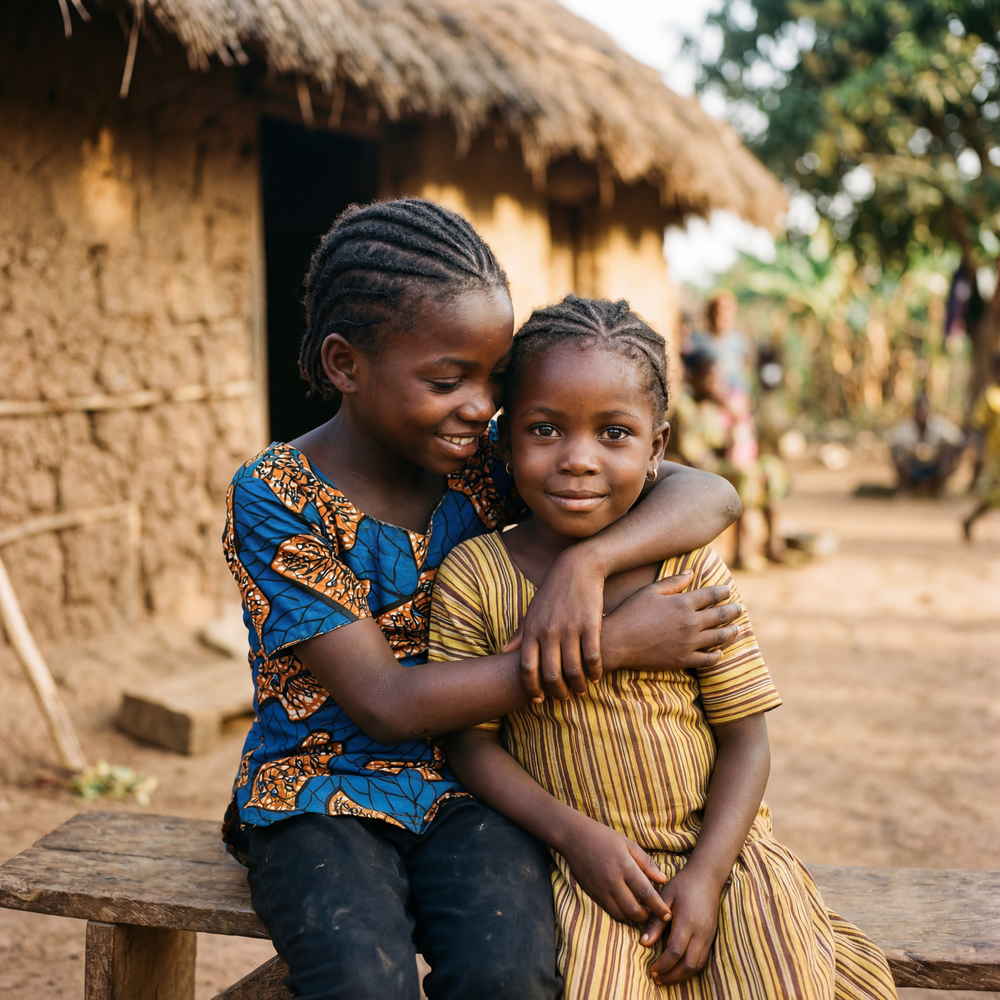
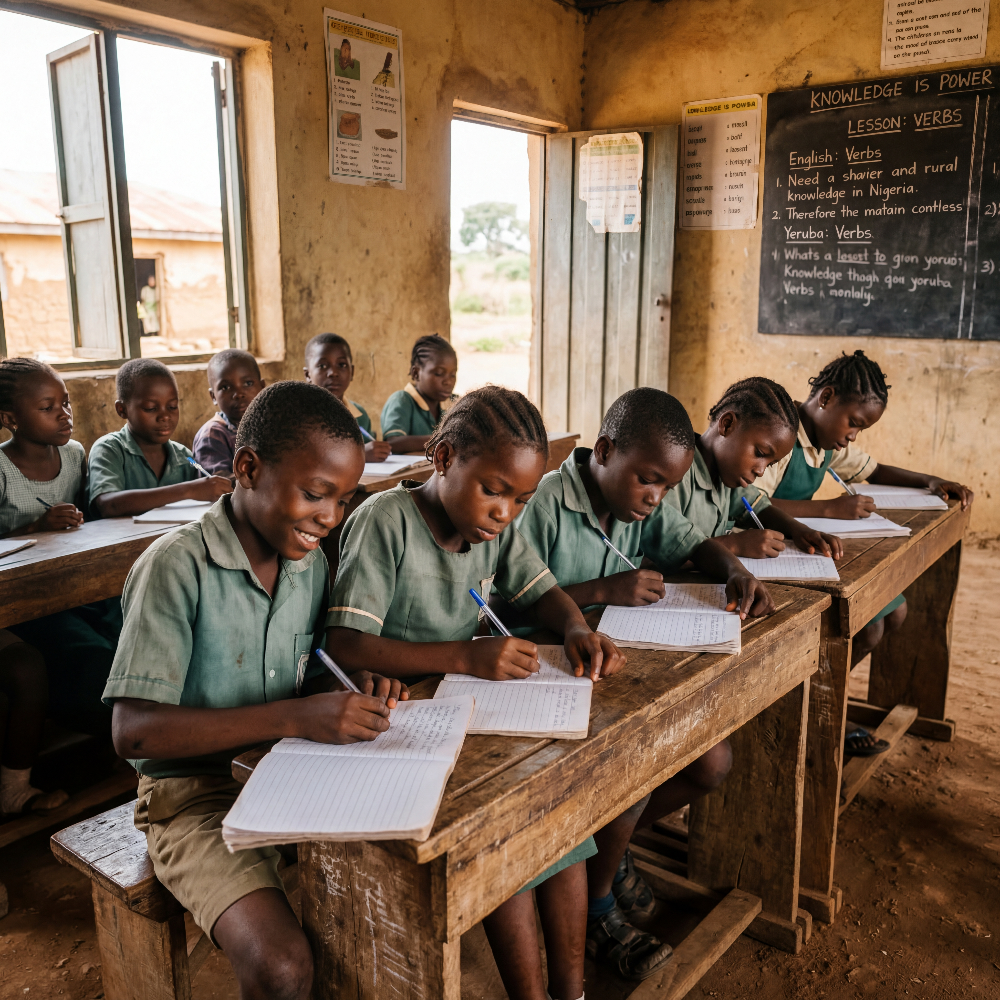
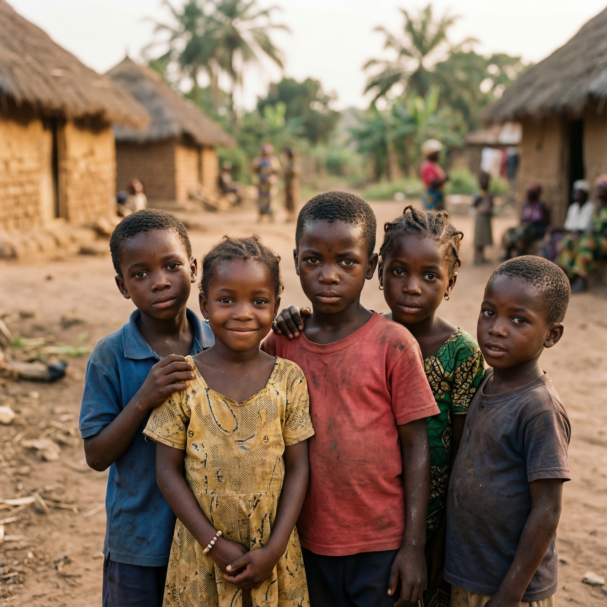
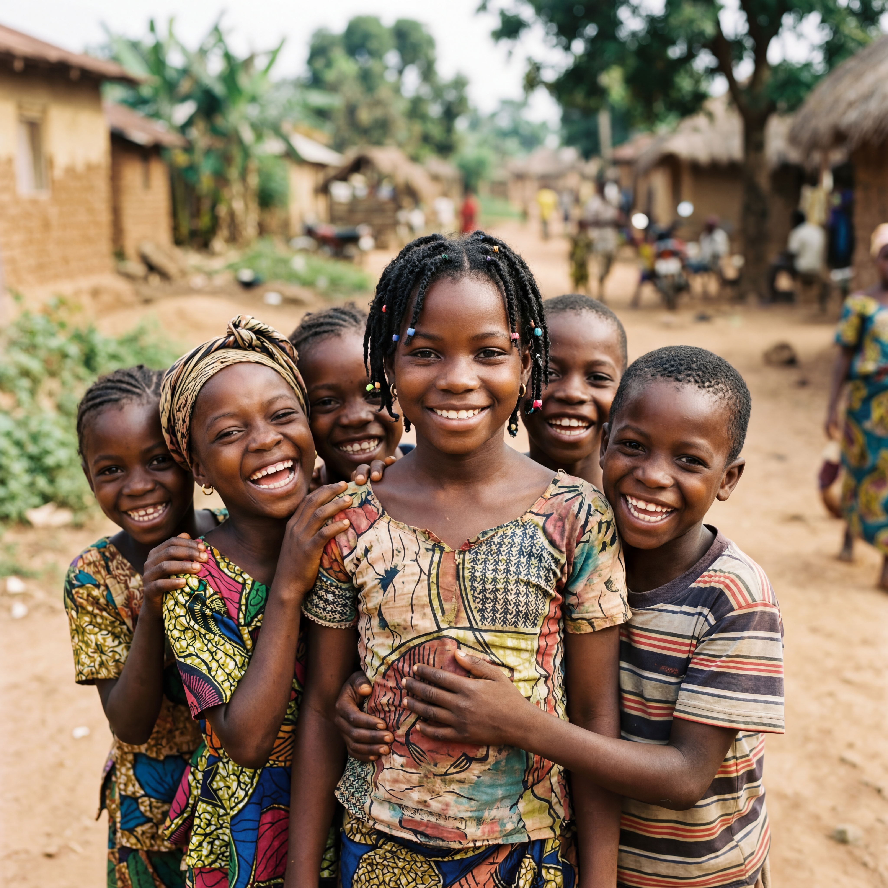
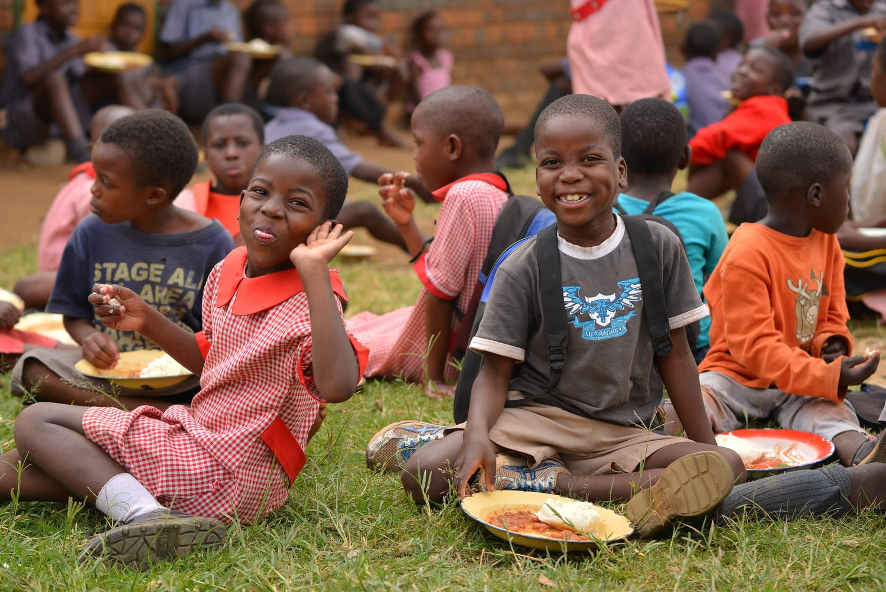
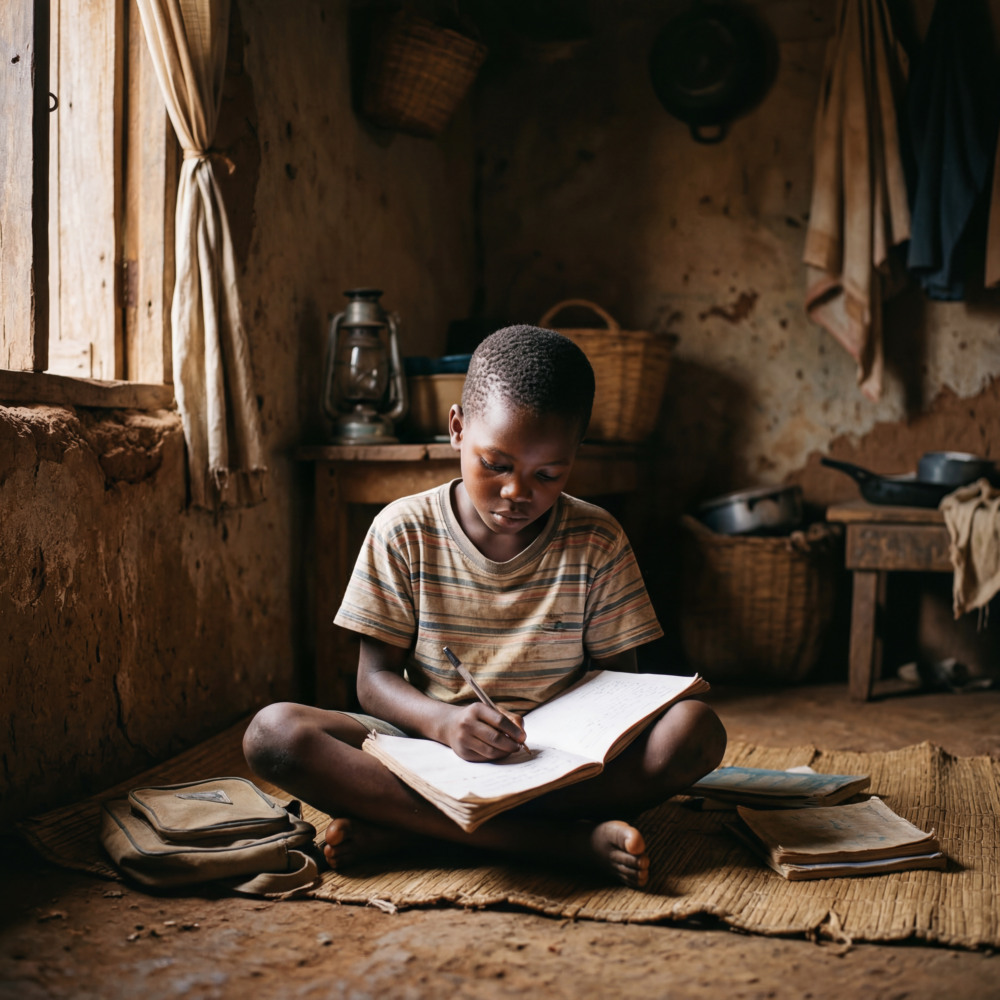
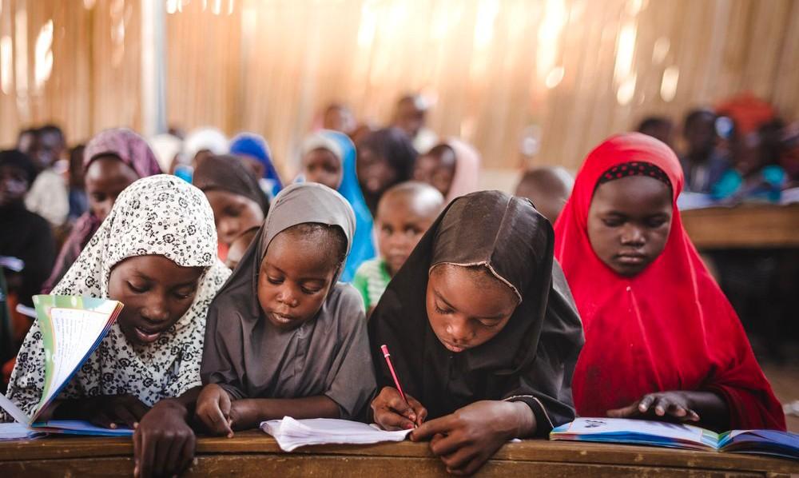
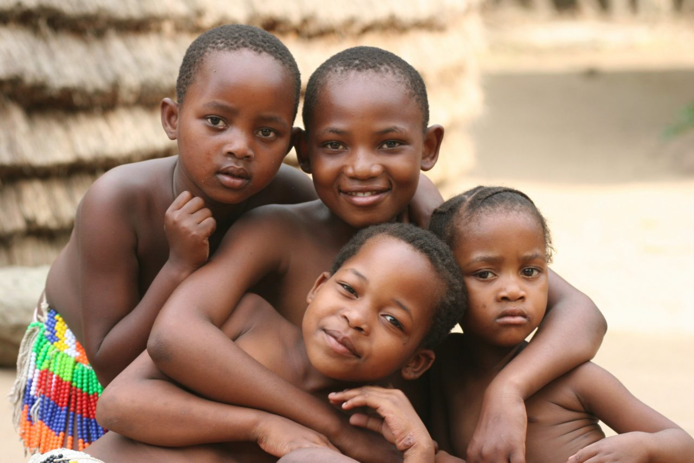

We fund scholarships for Nigerian university students and fight malaria in underserved communities — because education and health are the foundation of everything.
Scholarships, tuition support, and mentorship for low-income Nigerian university students who have the potential but not the means.
Grassroots health education, mosquito net distribution, and community-based research to eliminate malaria in vulnerable communities.
Partnering with local institutions, health providers, and community leaders to build sustainable change that lasts beyond any single program.
Life Changers Education, Research and Medical Foundation (LCERMF) is a California-based 501(c)(3) nonprofit dedicated to serving low-income and underserved communities in Nigeria. We exist to empower students to pursue and complete higher education, and to equip communities with the knowledge and tools necessary to eliminate malaria.
We believe that a student who graduates changes a family. A community free of malaria grows. And a nation with both education and health can thrive. That is the future we are building.
"We see a future where every Nigerian student has equal access to education, and where malaria is no longer a barrier to health, economic stability, and national development."

Serving Communities Across Nigeria
Everything we do is focused on creating lasting change for low-income communities in Nigeria — one student, one family, one community at a time.

Many qualified students in Nigeria are unable to complete university education due to financial hardship. We provide structured financial assistance, mentorship, and support so that potential is never stopped by poverty.

Malaria remains a leading cause of death in low-income Nigerian communities. We work at the grassroots level to educate, prevent, and protect — giving communities the tools to fight back.
LCERMF is a growing foundation with clear goals and a structured plan. Every dollar donated goes directly into programming.
These are the children, students, and communities we serve. Every donation is a direct investment in their future.





We hold ourselves to the highest standards of nonprofit governance so that every donor can give with full confidence.
Officially recognized by the IRS as a tax-exempt public charity. All donations are fully tax-deductible under U.S. federal law.
Formally incorporated as a California nonprofit public benefit corporation with active registration on file.
All funds are managed under a written Financial Controls Policy with dual-signatory banking, annual audits, and documented expenditures.
Board members and officers operate under a formal Conflict of Interest Policy to ensure all decisions serve the mission, not individuals.
Recipients are selected by an independent committee using objective, written criteria. No scholarships are awarded to insiders or their families.
LCERMF retains full control of all Nigerian operations. Local coordinators operate under written agreements with documented reporting and receipts.
We are committed to directing every donated dollar toward scholarships, malaria prevention, and community health programs. Our founders do not draw salaries from donated funds during the foundation's early stages. You give to change a life — and that is exactly where your money goes.
We provide financial assistance to college and university students from low-income families across Nigeria who demonstrate both financial need and academic potential.
Scholarships cover tuition, academic fees, books, and where applicable, living stipends to support accommodation and basic needs — so you can focus entirely on your education.
A scholarship funded today keeps a student in school tomorrow. A mosquito net distributed today saves a child this season. Your donation — any amount — has direct, measurable impact on real lives.
LCERMF is a 501(c)(3) nonprofit. All donations are tax-deductible. EIN on file.
Everything you need to know about LCERMF, our programs, and how to get involved.
LCERMF serves low-income and underserved communities in Nigeria. Our scholarship program focuses on college and university students from financially disadvantaged families across Nigeria. Our malaria prevention program reaches grassroots communities with limited access to healthcare and health education.
Yes. LCERMF is a recognized 501(c)(3) nonprofit organization under the U.S. Internal Revenue Code. All donations made to LCERMF are fully tax-deductible to the extent permitted by law. You will receive a donation receipt for your records.
Scholarship recipients are selected by an independent Scholarship Committee using written, objective criteria including financial need, academic achievement, and commitment to community service. No scholarships are awarded to board members, officers, or their family members. Funds are paid directly to the educational institution wherever possible.
Our Malaria Prevention Initiative conducts grassroots education workshops, distributes culturally appropriate health materials, and partners with local health clinics and community leaders. We also support distribution of insecticide-treated mosquito nets and conduct community surveys to assess malaria awareness and prevention practices. All field activities are managed under written agreements with full documentation and oversight maintained by LCERMF.
LCERMF operates under a formal Financial Controls Policy. All funds are held in a foundation bank account requiring dual-signatory authorization. Accounts are audited annually. Nigerian field operations are governed by written agreements with local coordinators, and all expenditures are documented with receipts. LCERMF retains full control of all charitable activities and does not act as a conduit for any foreign organization.
There are several ways to support our mission. You can share our story with your network, connect us with potential donors or grant-making foundations, volunteer your skills in areas like communications, health education, or program management, or become a corporate sponsor. Reach out to us directly at the contact below to start a conversation.